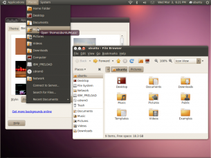
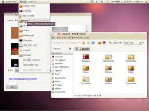

Múlt héten jelentette be a Canonical, hogy változtat az Ubuntu branden. Megváltozott a logó, a három színből álló kör egyszínű lett, ami szerintem szebb így. Jobb lett az Ubuntu felirat betűtípusa, végre nem az az idétlen, lekerekített vacak van, ami eddig. Aztán mutattak még néhány logót, themét, meg miegymást.
Nagyjából végére is jutottam a pozitívumoknak, mivel a bemutatott themék véleményem szerint ocsmányak, nem mintha nem lenne az mindegyik, de a 9.10-es kinézete az összes eddigi közül a legjobb. Jó hír, hogy tovább finomítottak Gnome panel ikonjain, ezáltal konzisztensebb kinézetet nyújtva a felhasználó számára. Az új default theméktől viszont kifordul a belem. Sajnálom, ez van. Direkt fel is tettem virtuális gépre tegnap egy daily buildet a 10.04-esből, hogy jobban lássam miket is újítottak. Visszatérve a themékre (Ambiance, Radiance), borzalmasak:
 
Aztán ott van természetesen az új kiadás default háttere, ami lilás lett, erősen hasonlítva a Mac OS X Aurora hátterére (engem legalábbis arra elékeztet). A háttér oké, tetszik. Ha valakit érdekel, akkor találtam egy visszatekintést az Ubuntu eddigi összes kiadásának alapértelmezett hátteréről.
Kérdés, hogy feltétlenül örülni kell-e az új kinézetnek. Összességében nekem tetszenek a változtatások, de szokni kell a címsorban balra került min, max, bezáró gombokat, a themét meg úgyis lecserélem majd. :)
Nem volt kedvem minden apró részletre kitérni, most ennyi jutott eszembe. Persze lesz microblogging kliens, pár trendi (utálom ezt a szót) hülyeség is az új kiadásban, de ezt el kell viselni, aztán meg úgyis testre szabja magának a disztrót az ember, ha akarja. A brandváltásról teljes egészében az Ubuntu wiki oldalán lehet olvasni. Kösz a figyelmet.
Ti mit gondoltok?


{kind=link}
{kind=link}